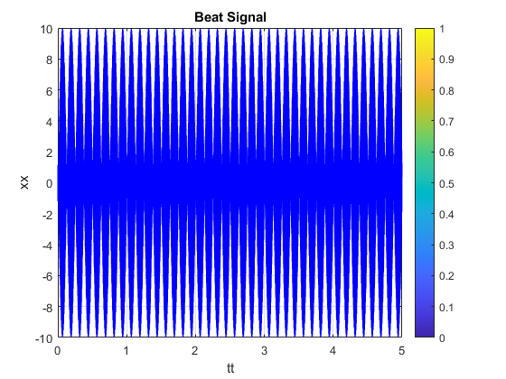
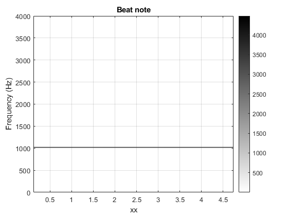
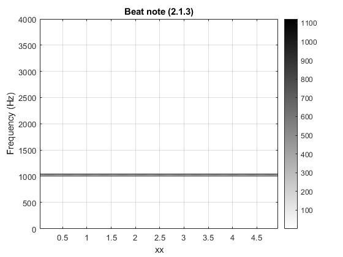
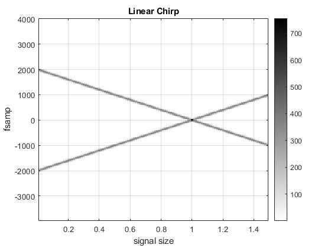
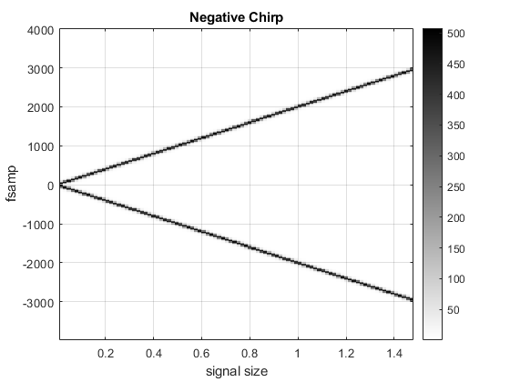
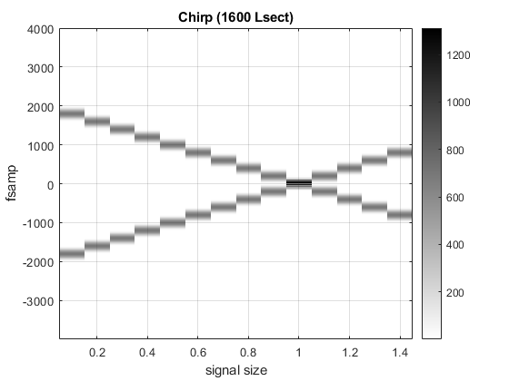

Contents
- Lab S7: Spectrograms of AM and FM Signals
- S7 lab: part 2.1.2
- Part A: code for the beat signal
- Part B: Location of 2 spectrum lines
- Part C: spectrogram of b(t) using a (window) section length of LSECT = 256
- S7 lab: part 2.1.3
- Part A: From your first experiment, determine C
- Part B: Now change f_delta to 16 Hz and repeat the resolution experiment in Sect. 2.1.2
- S7 lab: part 2.2
- Part A Generate a chirp signal that starts at 2000 Hz when t=0s, and chirps down to 1000 Hz, at t=1.5s
- Part B (Generate the chirp signal in MATLAB and make a spectrogram with LSECT = 200)
- Part C Will you hear negative frequency?
- S7 lab: part 2.2.1
- Part A Generate a chirp signal same as 2.2 but with Lsect = 1600
- Part B When LSECT = 1600, determine the section duration TSECT in sec
- Part C Based on TSECT, determine the time locations where the spectrum is being computed
Lab S7: Spectrograms of AM and FM Signals
Third exercise of project group 1
This lab involves synthesizing AM and FM Signals and verifying the correct frequency by observing spectrograms. The main goal is to learn about the connection between time-domain definition and frequency domain content.
% note the sound portions of this lab are more accurate if run in their own % .m file. Together it seems to cut the length short.
S7 lab: part 2.1.2
The first part is called Beat Notes and Frequency Resolution This part focuses on 2 sinusoidal signals that are multiplied in the time domain and result in a new signal with a different amplitude and frequency.
clear all;
Part A: code for the beat signal
In this part, we are given a beat signal b(t) with a sampling frequency of 8000, duration of 5s, and a change in frequency of 4Hz. The other values are derived in the prelab.
Amp = 10; %-- B in equation above fc = 1024; %-- center frequency phic = 2*pi*rand; %-- phase of 2nd sinusoid (random) fDelta = 4; %-- modulating frequency phiDelta = 2*pi*rand; %-- phase of 1st sinusoid (random) tStart = 0; %-- starting time (secs) tStop = 5; %-- ending time (secs) fSamp = 8000; tt = tStart:(1/fSamp):tStop; %-- vector of times xx = Amp*cos(2*pi*fc*tt+phic).*cos(2*pi*fDelta*tt+phiDelta); soundsc( xx, fSamp ); %-- uncomment to hear the sound figure(1); plot(tt,xx,'b'), colorbar, grid on %-- with negative frequencies title("Beat Signal"); xlabel("tt"); ylabel("xx");
Part B: Location of 2 spectrum lines
This part involves using the fc and f_delta to calculate the frequency of the 2 specrum lines.
% f_delta = 4 Hz % fc = 1024 Hz % % f1 = fc-f_delta = 1024-4 = 1020 Hz % f2 = fc+f_delta = 1024+4 = 1028 Hz % % so there are 2 spectrum line at 1020 Hz and 1028Hz clear all;
Part C: spectrogram of b(t) using a (window) section length of LSECT = 256
In this next part we add a window with a section length to the previous code. Later we also calculate the associated section duration (Tsect).
Amp = 10; %-- B in equation above fc = 1024; %-- center frequency phic = 2*pi*rand; %-- phase of 2nd sinusoid (random) fDelta = 4; %-- modulating frequency phiDelta = 2*pi*rand; %-- phase of 1st sinusoid (random) tStart = 0; %-- starting time (secs) tStop = 5; %-- ending time (secs) fSamp = 8000; tt = tStart:(1/fSamp):tStop; %-- vector of times xx = Amp*cos(2*pi*fc*tt+phic).*cos(2*pi*fDelta*tt+phiDelta); Lsect = 3700; % 256 original Lsect is too small, 3700 works (zoom in on point of interest to see specrum) figure(2); plotspec(xx,fSamp,Lsect), colorbar, grid on %-- with negative frequencies title("Beat note"); xlabel("xx"); ylabel("Frequency (Hz)"); % The spectrum obtained does not clearly show 2 unique lines. This is due % to Lsect having a small value (256) which prevents the spectrogram from % getting accurate results. A longer section length would fix this. % frequencys are correct at 3700 Lsect value % Tsect = section duration % Tsect = Lsect/fs = 3700/8000 = .4625 sec
ans =
Image with properties:
CData: [1851×20 double]
CDataMapping: 'scaled'
Use GET to show all properties
 S7 lab: part 2.1.3
given new f_delta calculate the new Lsect and plot to see new 2 spectum
Part A: From your first experiment, determine C
f1 - f2 = C/Tsect C = Tsect|f1 - f2| = 0.4625s * 1020 - 1028 = 3.7
clear all;
Part B: Now change f_delta to 16 Hz and repeat the resolution experiment in Sect. 2.1.2
f_delta = 16 Hz fc = 1024 Hz
f1 = fc-f_delta = 1024-16 = 1008 Hz f2 = fc+f_delta = 1024+16 = 1040 Hz
so there are 2 spectrum line at 1008 Hz and 1040Hz
Tsect = 3.7/|1008-1040| = .115625 sec Lsect = Tsect*fs = .115625 sec * 8000 = 925
% now plot the results given new calculated Lsect and frequencies and % verify that 2 unique spectrum can still be seen. Amp = 10; %-- B in equation above fc = 1024; %-- center frequency phic = 2*pi*rand; %-- phase of 2nd sinusoid (random) fDelta = 16; %-- modulating frequency phiDelta = 2*pi*rand; %-- phase of 1st sinusoid (random) tStart = 0; %-- starting time (secs) tStop = 5; %-- ending time (secs) fSamp = 8000; tt = tStart:(1/fSamp):tStop; %-- vector of times xx = Amp*cos(2*pi*fc*tt+phic).*cos(2*pi*fDelta*tt+phiDelta); Lsect = 925; figure(3); plotspec(xx,fSamp,Lsect), colorbar, grid on %-- with negative frequencies title("Beat note (2.1.3)"); xlabel("xx"); ylabel("Frequency (Hz)"); % just like figure 2 we need to zoom in on the frequency point of interest % to see the 2 spectrum % 2 spectrum can be seen with the calculated Lsect for the new f_delta
ans =
Image with properties:
CData: [463×85 double]
CDataMapping: 'scaled'
Use GET to show all properties
 S7 lab: part 2.2
Test negative chirps A chirp with a negative instantaneous frequency
clear all;
Part A Generate a chirp signal that starts at 2000 Hz when t=0s, and chirps down to 1000 Hz, at t=1.5s
fSamp = 8000; %-Number of time samples per second dt = 1/fSamp; tStart = 0; tStop = 1.5; tt = tStart:dt:tStop; mu = -1000; % fzero = 2000 phi = 2*pi*rand; %-- random phase % psi = 2*pi*mu*tt.^2 + 2*pi*2000*tt + phi; % cc = real( 7.7*exp(1j*psi) ); soundsc( cc, fSamp ); %-- uncomment to hear the sound figure(4); plotspec( cc+1j*1e-12, fSamp, 200 ), colorbar, grid on %-- with negative frequencies title("Linear Chirp"); xlabel("signal size"); ylabel("fsamp"); %the signal pitch goes down because of the negative component
ans =
Image with properties:
CData: [200×119 double]
CDataMapping: 'scaled'
Use GET to show all properties
 Part B (Generate the chirp signal in MATLAB and make a spectrogram with LSECT = 200)
the Lsect is 200 as seen in the graph above Tsect = 200/8000 = 0.025s
clear all;
Part C Will you hear negative frequency?
Run the same test as part A of this exercise, but start at a frequency of zero and chirp down 1000 Hz.
fSamp = 8000; %-Number of time samples per second dt = 1/fSamp; tStart = 0; tStop = 1.5; tt = tStart:dt:tStop; mu = -1000; % fzero = 0 phi = 2*pi*rand; %-- random phase % psi = 2*pi*mu*tt.^2 + 2*pi*0*tt + phi; % cc = real( 7.7*exp(1j*psi) ); soundsc( cc, fSamp ); %-- uncomment to hear the sound figure(5); plotspec( cc+1j*1e-12, fSamp, 256 ), colorbar, grid on %-- with negative frequencies title("Negative Chirp"); xlabel("signal size"); ylabel("fsamp"); % negative frequency can't be heard. A spectrum that starts with a zero % frequency and gradually chirps down will produce a result that consists % of a positive mirror image, which is what is heard from the soundsc % function. starts low pitch and goes to high pitch.
ans =
Image with properties:
CData: [256×92 double]
CDataMapping: 'scaled'
Use GET to show all properties
 S7 lab: part 2.2.1
Look at a signal with nonconstant frequency and an study how the temporal features of the spectrogram depend on the section length
The spectrogram uses 50 percent overlapping and skipping. By knowing this information, we can determine the time locations where the spectrum is being generated.
clear all;
Part A Generate a chirp signal same as 2.2 but with Lsect = 1600
fSamp = 8000; %-Number of time samples per second dt = 1/fSamp; tStart = 0; tStop = 1.5; tt = tStart:dt:tStop; mu = -1000; fzero = 2000; phi = 2*pi*rand; %-- random phase % psi = 2*pi*mu*tt.^2 + 2*pi*2000*tt + phi; % cc = real( 7.7*exp(1j*psi) ); soundsc( cc, fSamp ); %-- uncomment to hear the sound figure(6); plotspec( cc+1j*1e-12, fSamp, 1600 ), colorbar, grid on %-- with negative frequencies title("Chirp (1600 Lsect)"); xlabel("signal size"); ylabel("fsamp");
ans =
Image with properties:
CData: [1600×14 double]
CDataMapping: 'scaled'
Use GET to show all properties
 Part B When LSECT = 1600, determine the section duration TSECT in sec
Tsect = Lsect/fsamp = 1600/8000 = 0.26667
Part C Based on TSECT, determine the time locations where the spectrum is being computed
section time = 0.5*n*Lsect, n=nth value of the segment length when n = 1, (the first section length). The inside is 1s where the first section is overlapped by the second section.
when n = 2, (the second section length). The inside is 0.2s where the second section is overlapped by the third section.
when n = 3, (the third section length). The inside is 0.3s where the third section is overlapped by the fourth section.
when n = 4, (the fourth section length). The inside is 0.4s where the fourth section is overlapped by the fifth section length.
This pattern continues til n = 10., Tsect = 1s, which is where the overlap occurs. Tsect = (0.5*10*1600)/8000 = 1s section time (50%) = (0.5*n*Lsect)/fs, n = 1-10 section time = 0.1,0.2,0.3.... 1.4.